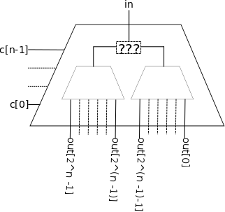

Simulations: Instructions Help
When you're ready to submit your solution, go to the assignments list.
Attention: You are allowed to submit a maximum of 5 times! for grade purposes. Once you have submitted your solution, you should see your grade and a feedback about your code on the Coursera website within 20 minutes. If you want to improve your grade, just submit an improved solution. The best of all your first 5 submissions will count as the final grade. You can still submit after the 5th time to get feedback on your improved solutions, however, these are for research purposes only, and will not be counted towards your final grade.
Download the simulations.zip handout archive file and extract it somewhere on your machine.
Circuit Simulation
In this part, you will explore the simulator for logic circuits started in lecture. This simulator is an example of a class of simulators based on discrete events.
The central data structure of the simulator is the agenda. The agenda memorizes actions to perform, sorted by their trigger time: actions to be performed first are in the beginning.
The simulation runs by extracting the first action from the agenda, advancing the time of simulation to the trigger time of this action, triggering the action, and restarting the process until the agenda is empty.
The circuits simulated by our program are composed of wires and components. A wire transports a digital signal, which can be 0 (represented by false) or 1 (represented by true).
A component is connected to input and output wires, and the value of
output wires is a function of the values of input wires. The change of
values in the input wires does not produce an immediate change in the
values of the output wires: each component defines a delay that is specific to it.
With each wire, we associate a set of functions, also called actions, which are activated each time the value transported by the wire changes.
For this project, we use three basic components: an inverter, an and gate and an or gate. All the circuits will be composed of these basic pieces.
1. Or Gates
Write the methods orGate and orGate2 in the CircuitSimulator class of the Circuit.scala file:
-
orGateshould be implemented from scratch, following the pattern of theandGatemethod. -
orGate2should be implemented solely in terms ofandGateandinverter.
2. Demultiplexers
Write the method demux which realizes a demultiplexer with n control wires (and 2 to the power n
output wires). The demultiplexer directs the signal from an input wire
based on the control signal. The rest of the output signals are set to
0. The demux method has the following signature:
def demux(in: Wire, c: List[Wire], out: List[Wire])The list of control wires (c) and the the list of output wires (out) are assumed to be sorted by decreasing index: e.g. the head of the c list contains the control wire of index n-1.
Your implementation should be recursive and based on the gates that you implemented previously. As a hint, think of the base case: the simplest demultiplexer has 0 control wires and 1 output wire. Refer to the image below for some intuition on this last part.

Epidemy Simulation
In this part, you are going to write an epidemy simulator based on the simulation framework seen in lecture and used in the circuit simulation.
The scenario is as follows: the world (“Scalia”) consists of regular grid of 64 rooms (8x8) where each room is connected to four neighbouring rooms. Each room may contain an arbitrary number of persons. Scaliosis – a vicious killer virus – rages with a prevalence rate of 1% among the peaceful population of Scalia. It spreads with a transmissibility rate of 40%. By prevalence rate, we mean that a certain portion of the population is infected to begin with. The transmissibility rate refers to the probability of one person to be infected.
In the beginning, 300 people are equally distributed among the rooms. Each step of the simulation corresponds to one simulated day. The disease and behaviour of people is simulated according to the following rules.
Rules
-
After each move (and also after the beginning of the simulation), a person moves to one of their neighbouring rooms (left, right, up, down) within the next 5 days (with equally distributed probability). Therefore, a person moves repeatedly until he is dead (discussed below), and the waiting time between two moves varies from 1 to 5 days (randomly decided by you each time). Note that the first row is considered to be a neighbour of row eight (and vice versa); analogously, the first column is a neighbour of column eight (and vice versa).
-
A person avoids rooms with sick or dead (visibly infectious) people. This means that if a person is surrounded by visibly infectious people, he does not change position; however, he might change position the next time he tries to move (for example, if a visibly infectious person moved out of one of the neighbouring rooms or became immune).
-
When a person moves into a room with an infectious person he might get infected according to the transmissibility rate, unless the person is already infected or immune. A person cannot get infected between moves (this is slightly unrealistic, but will simplify your implementation).
-
When a person becomes infected, he does not immediately get sick, but enters a phase of incubation in which he is infectious but not sick.
-
After 6 days of becoming infected, a person becomes sick and is therefore visibly infectious.
-
After 14 days of becoming infected, a person dies with a probability of 25%. Dead people do not move, but stay visibly infectious.
-
After 16 days of becoming infected, a person becomes immune. He is no longer visibly infectious, but remains infectious. An immune person cannot get infected.
-
After 18 days of becoming infected, a person turns healthy. He is now in the same state as he was before his infection, which means that he can get infected again.
Graphical display
To make the project more interesting, we provide you with a graphical display class (class EpidemyDisplay) that is used to visualize simulations. The display is automatically available to you when you complete the provided (partial) EpidemySimulator class. To start the graphical output (and the simulation), run the simulations.gui.EpidemyDisplay object.
Healthy persons are painted in green color. Persons that have their sick field set to true are painted in red color, suitable to indicate visibly infected people. Immune (i.e. infected but not sick) people are painted in yellow.
Exercises
-
Implement an epidemy simulator according to the above rules by completing the partial
EpidemySimulatorclass (available on the course web site). Make sure to first inspect the code ofEpidemyDisplayandSimulator, and understand how the display uses the simulator’s agenda to perform the simulation. Your task is to add the correctWorkItems to the agenda. How does the simulation over 5 experiment runs? -
Extend your simulation with air traffic : when a person decides to move, she will choose to take the airplane with a probability of 1%, thereby moving to a random room in the grid (rooms with visibly infected people are not avoided). How does air traffic impact the epidemy?
-
Pandemic Response. To reduce the number of casualties, the president of Scalia decides to enforce one of the following health policies :
-
Reduce Mobility Act. The mobility of people is decreased by half. The mobility of a visibly infected person is further reduced by half.
-
The Chosen Few Act. 5% of people (VIPs such as pop singers, football players, etc.) are given vaccines when first created. They never become infected.
Implement both of these policies. Which of these policies is more effective?
-
Note: Use the SimConfig object to
declare your configuration values for the simulations. When you submit,
set them to the default values, and disable extensions (air traffic,
reduced mobility and vaccination).